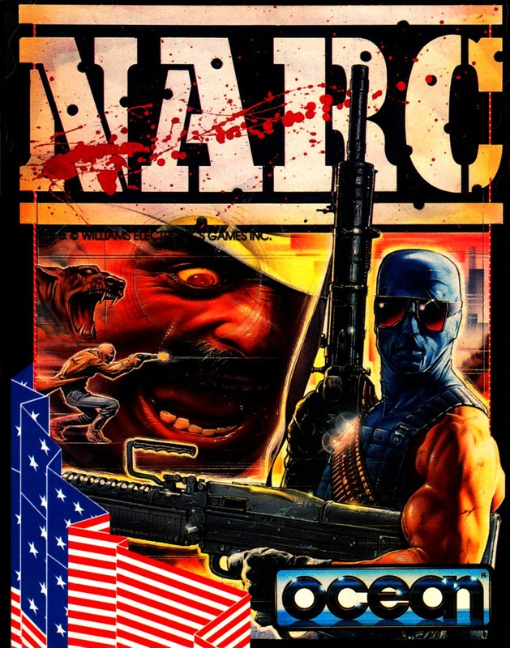
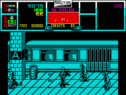

NARC


{kind=link}

| Publisher: | Ocean |
| Price: | £10.99 / £15.99 |
| Year: | 1990 |
| Source: | CRASH, Issue 83 |

Enter the world of junkies, punks, thieves and murderers and be thankful you’re on the good guys’ side in this action blaster produced by the excellent Sales Curve team (St. Dragon). Elite cop team Hit Man and Max Force have been assigned the job of destroying the K.R.A.K. criminal syndicate and protecting the innocent in this drug crazed world.
The cops you control have their special brand of justice. Armed with machine guns and rocket bombs their main objective is to blow away anything and everything they meet — although you can also arrest the drug dealers if you’re feeling particularly nice. You start the game on foot and really have to work hard to avoid ending up in a body bag. If you survive to later levels, you’ll be rewarded with a high powered sports car and specially equipped helicopter which are handy for quick getaways!

The action in NARC takes place in some of the worst places you could wish to go. Ghetto streets, abandoned warehouses, subways, and bridges all have to be cleaned up before going on to the ultimate showdown with Mr Big at the corporate crime headquarters. Seizing evidence is a great way to build up a bonus. Evidence is uncovered when you blast a criminal, they drop whatever they were carrying: usually it’s money and drugs, if you’re lucky it’s a rocket to power up your weapons.
What really makes NARC special is the wide array of criminals you meet on your assignment. They all have different characteristics and weapons, right down to the vicious dogs that snap at your heels! The graphics and animation are stunning — especially when you blast a junkie with a rocket! Watch his arms, legs and head go flying all over the screen, bouncing when they hit the ground (yuk)!
The game is a great success when you play it as a two player team too: you can help each other out — but be careful, you can also blow each other to kingdom come! You can wave goodbye to the boring beat-em-up and say hello to the new craze in computer games — gratuitous violence simulator! At least it’s all in a good cause...
NICK — 94%
Hah! This is what we want! Plenty of good old fashioned blood, guts and violence (steady on —Ed)’ All credit must go to NARC’s programmers for doing such a brilliant lob on the conversion of one of my all time favourite coin-ops. Sadly, due to the Spectrum’s limitations, the game is monochrome but the attention to detail is amazing! The moving sprites are highly defined, as are the backdrops. Also impressive is the amount and variety of bad guys you’re up against. They’re all vicious but as you near the boss’s mansion they become suicidal. Full marks go to Ocean for this rip, mangle and maim game!
MARK — 95%
RATING
Action packed blasting fun — this one is going to make heads roll!
| Presentation: | 92% |
| Graphics: | 94% |
| Sound: | 87% |
| Playability: | 93% |
| Addictivity: | 93% |
| Overall: | 92% |